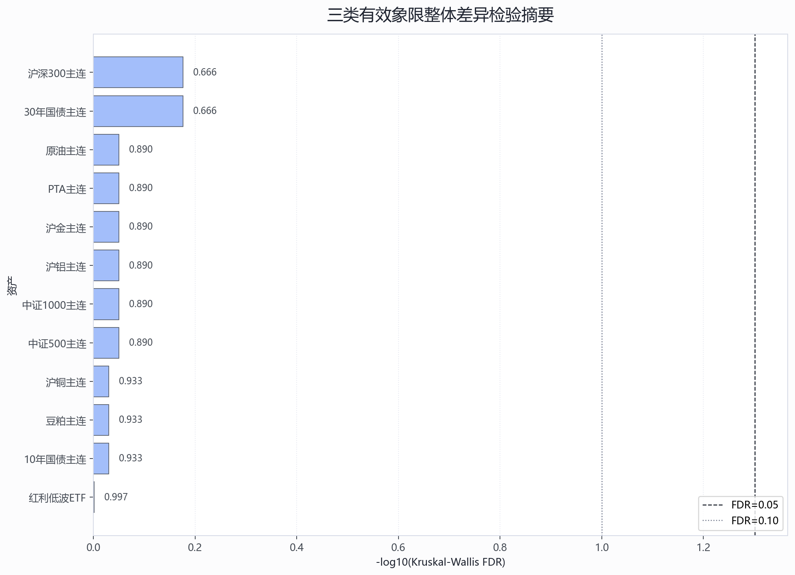
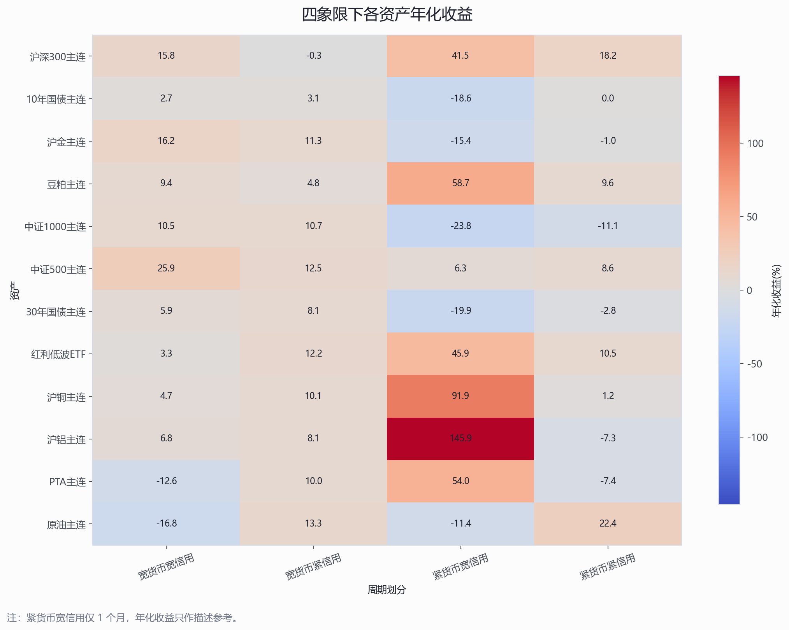
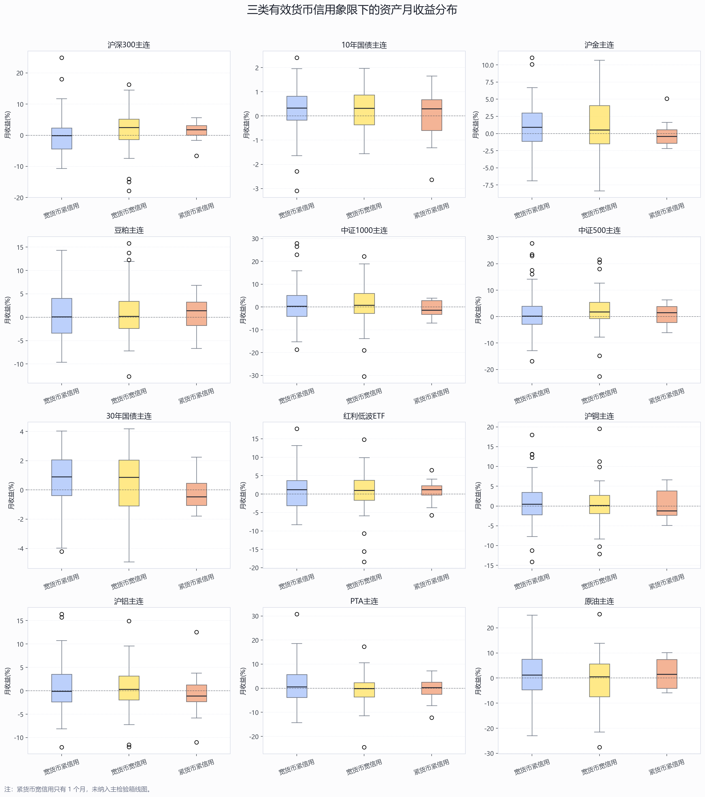
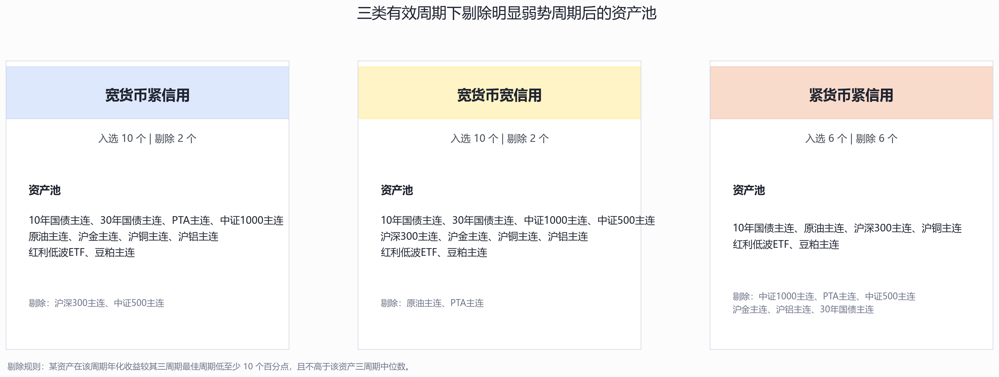

货币信用四象限资产表现显著性分析
技术摘要
- FDR 5% 口径下没有资产通过整体差异检验。这意味着在多重检验校正后，四象限信号对单资产月收益的可辨识度有限。
- 样本结构不均衡：宽货币紧信用=69、宽货币宽信用=48、紧货币紧信用=14、紧货币宽信用=1。其中紧货币宽信用只有 1 个月，因此只展示描述统计，不参与主显著性检验。
- 检验粒度：日收益先复利为月收益，再与月度象限匹配；样本期为 2015-01 至 2025-12，共 132 个月、12 个风险资产。
关键发现与视觉证据
下表按 Kruskal-Wallis 的 FDR 校正后 p 值排序。Kruskal-Wallis 是本报告主检验；Welch ANOVA 作为均值差异的补充参考。显著性判断优先看 Kruskal_FDR。
| 资产 | Kruskal_p值 | Kruskal_FDR | Welch_p值 | Welch_FDR | 表现最好象限_按月均收益 | 表现最弱象限_按月均收益 | 最大月均收益差(百分点) | 结论 |
|---|---|---|---|---|---|---|---|---|
| 30年国债主连 | 0.111 | 0.666 | 0.098 | 0.879 | 宽货币紧信用 | 紧货币紧信用 | 0.895 | 不显著 |
| 沪深300主连 | 0.111 | 0.666 | 0.439 | 0.879 | 宽货币宽信用 | 宽货币紧信用 | 1.301 | 不显著 |
| 中证500主连 | 0.328 | 0.890 | 0.616 | 0.904 | 宽货币宽信用 | 紧货币紧信用 | 1.483 | 不显著 |
| 沪金主连 | 0.423 | 0.890 | 0.156 | 0.879 | 宽货币宽信用 | 紧货币紧信用 | 1.424 | 不显著 |
| 中证1000主连 | 0.439 | 0.890 | 0.259 | 0.879 | 宽货币宽信用 | 紧货币紧信用 | 2.159 | 不显著 |
| PTA主连 | 0.498 | 0.890 | 0.307 | 0.879 | 宽货币紧信用 | 宽货币宽信用 | 1.950 | 不显著 |
| 原油主连 | 0.557 | 0.890 | 0.377 | 0.879 | 紧货币紧信用 | 宽货币宽信用 | 2.805 | 不显著 |
| 沪铝主连 | 0.594 | 0.890 | 0.718 | 0.904 | 宽货币紧信用 | 紧货币紧信用 | 1.268 | 不显著 |
| 10年国债主连 | 0.814 | 0.933 | 0.737 | 0.904 | 宽货币紧信用 | 紧货币紧信用 | 0.253 | 不显著 |
| 沪铜主连 | 0.819 | 0.933 | 0.796 | 0.904 | 宽货币紧信用 | 紧货币紧信用 | 0.772 | 不显著 |
| 豆粕主连 | 0.855 | 0.933 | 0.931 | 0.931 | 宽货币宽信用 | 宽货币紧信用 | 0.358 | 不显著 |
| 红利低波ETF | 0.997 | 0.997 | 0.829 | 0.904 | 宽货币紧信用 | 宽货币宽信用 | 0.663 | 不显著 |

年化收益热力图展示四象限的描述性表现。紧货币宽信用只有 1 个月，其年化数字容易被单月收益放大，不能作为稳健结论。

箱线图只使用样本足够的三类象限，用于观察收益分布、离群点和中位数差异。

剔除明显弱势周期后的三类资产池
资产池只在三类有效周期内构建。规则是：对每个资产分别比较三类有效周期的年化收益，若某周期较该资产最佳周期低至少 10 个百分点，且不高于该资产三周期年化收益中位数，则剔除该资产在该周期的配置资格。
| 周期划分 | 入选资产数 | 剔除资产数 | 资产池 | 剔除资产 | 平均年化收益(%) | 平均月均收益(%) | 平均胜率(%) |
|---|---|---|---|---|---|---|---|
| 宽货币紧信用 | 10 | 2 | 10年国债主连、30年国债主连、PTA主连、中证1000主连、原油主连、沪金主连、沪铜主连、沪铝主连、红利低波ETF、豆粕主连 | 沪深300主连、中证500主连 | 9.180 | 0.894 | 56.667 |
| 宽货币宽信用 | 10 | 2 | 10年国债主连、30年国债主连、中证1000主连、中证500主连、沪深300主连、沪金主连、沪铜主连、沪铝主连、红利低波ETF、豆粕主连 | 原油主连、PTA主连 | 10.132 | 0.954 | 58.333 |
| 紧货币紧信用 | 6 | 6 | 10年国债主连、原油主连、沪深300主连、沪铜主连、红利低波ETF、豆粕主连 | 中证1000主连、PTA主连、中证500主连、沪金主连、沪铝主连、30年国债主连 | 10.307 | 0.870 | 59.524 |

资产-周期剔除明细
| 资产 | 周期划分 | 年化收益(%) | 该资产最佳周期 | 与最佳周期差距(百分点) | 三周期年化收益中位数(%) | 是否剔除 | 剔除原因 |
|---|---|---|---|---|---|---|---|
| 10年国债主连 | 宽货币紧信用 | 3.121 | 宽货币紧信用 | 0.000 | 2.742 | False | 保留 |
| 10年国债主连 | 宽货币宽信用 | 2.742 | 宽货币紧信用 | 0.379 | 2.742 | False | 保留 |
| 10年国债主连 | 紧货币紧信用 | 0.018 | 宽货币紧信用 | 3.103 | 2.742 | False | 保留 |
| 30年国债主连 | 宽货币紧信用 | 8.077 | 宽货币紧信用 | 0.000 | 5.884 | False | 保留 |
| 30年国债主连 | 宽货币宽信用 | 5.884 | 宽货币紧信用 | 2.193 | 5.884 | False | 保留 |
| 30年国债主连 | 紧货币紧信用 | -2.814 | 宽货币紧信用 | 10.892 | 5.884 | True | 较最佳周期低 10.9 个百分点，且不高于三周期中位数 |
| PTA主连 | 宽货币紧信用 | 9.974 | 宽货币紧信用 | 0.000 | -7.418 | False | 保留 |
| PTA主连 | 宽货币宽信用 | -12.595 | 宽货币紧信用 | 22.569 | -7.418 | True | 较最佳周期低 22.6 个百分点，且不高于三周期中位数 |
| PTA主连 | 紧货币紧信用 | -7.418 | 宽货币紧信用 | 17.392 | -7.418 | True | 较最佳周期低 17.4 个百分点，且不高于三周期中位数 |
| 中证1000主连 | 宽货币紧信用 | 10.689 | 宽货币紧信用 | 0.000 | 10.490 | False | 保留 |
| 中证1000主连 | 宽货币宽信用 | 10.490 | 宽货币紧信用 | 0.199 | 10.490 | False | 保留 |
| 中证1000主连 | 紧货币紧信用 | -11.137 | 宽货币紧信用 | 21.825 | 10.490 | True | 较最佳周期低 21.8 个百分点，且不高于三周期中位数 |
| 中证500主连 | 宽货币紧信用 | 12.462 | 宽货币宽信用 | 13.467 | 12.462 | True | 较最佳周期低 13.5 个百分点，且不高于三周期中位数 |
| 中证500主连 | 宽货币宽信用 | 25.929 | 宽货币宽信用 | 0.000 | 12.462 | False | 保留 |
| 中证500主连 | 紧货币紧信用 | 8.591 | 宽货币宽信用 | 17.338 | 12.462 | True | 较最佳周期低 17.3 个百分点，且不高于三周期中位数 |
| 原油主连 | 宽货币紧信用 | 13.322 | 紧货币紧信用 | 9.074 | 13.322 | False | 保留 |
| 原油主连 | 宽货币宽信用 | -16.791 | 紧货币紧信用 | 39.188 | 13.322 | True | 较最佳周期低 39.2 个百分点，且不高于三周期中位数 |
| 原油主连 | 紧货币紧信用 | 22.396 | 紧货币紧信用 | 0.000 | 13.322 | False | 保留 |
| 沪深300主连 | 宽货币紧信用 | -0.252 | 紧货币紧信用 | 18.409 | 15.779 | True | 较最佳周期低 18.4 个百分点，且不高于三周期中位数 |
| 沪深300主连 | 宽货币宽信用 | 15.779 | 紧货币紧信用 | 2.377 | 15.779 | False | 保留 |
| 沪深300主连 | 紧货币紧信用 | 18.156 | 紧货币紧信用 | 0.000 | 15.779 | False | 保留 |
| 沪金主连 | 宽货币紧信用 | 11.327 | 宽货币宽信用 | 4.892 | 11.327 | False | 保留 |
| 沪金主连 | 宽货币宽信用 | 16.219 | 宽货币宽信用 | 0.000 | 11.327 | False | 保留 |
| 沪金主连 | 紧货币紧信用 | -1.033 | 宽货币宽信用 | 17.252 | 11.327 | True | 较最佳周期低 17.3 个百分点，且不高于三周期中位数 |
| 沪铜主连 | 宽货币紧信用 | 10.150 | 宽货币紧信用 | 0.000 | 4.748 | False | 保留 |
| 沪铜主连 | 宽货币宽信用 | 4.748 | 宽货币紧信用 | 5.401 | 4.748 | False | 保留 |
| 沪铜主连 | 紧货币紧信用 | 1.229 | 宽货币紧信用 | 8.920 | 4.748 | False | 保留 |
| 沪铝主连 | 宽货币紧信用 | 8.132 | 宽货币紧信用 | 0.000 | 6.834 | False | 保留 |
| 沪铝主连 | 宽货币宽信用 | 6.834 | 宽货币紧信用 | 1.298 | 6.834 | False | 保留 |
| 沪铝主连 | 紧货币紧信用 | -7.284 | 宽货币紧信用 | 15.416 | 6.834 | True | 较最佳周期低 15.4 个百分点，且不高于三周期中位数 |
| 红利低波ETF | 宽货币紧信用 | 12.213 | 宽货币紧信用 | 0.000 | 10.482 | False | 保留 |
| 红利低波ETF | 宽货币宽信用 | 3.328 | 宽货币紧信用 | 8.885 | 10.482 | False | 保留 |
| 红利低波ETF | 紧货币紧信用 | 10.482 | 宽货币紧信用 | 1.731 | 10.482 | False | 保留 |
| 豆粕主连 | 宽货币紧信用 | 4.794 | 紧货币紧信用 | 4.766 | 9.363 | False | 保留 |
| 豆粕主连 | 宽货币宽信用 | 9.363 | 紧货币紧信用 | 0.197 | 9.363 | False | 保留 |
| 豆粕主连 | 紧货币紧信用 | 9.560 | 紧货币紧信用 | 0.000 | 9.363 | False | 保留 |
各资产表现最好的有效象限
下表只在三类有效象限内比较年化收益最高的象限，用于描述表现方向，不等同于显著性结论。
| 资产 | 年化收益最高的有效象限 | 样本月数 | 年化收益(%) | 月均收益(%) | 胜率(%) |
|---|---|---|---|---|---|
| 中证500主连 | 宽货币宽信用 | 48 | 25.929 | 2.236 | 70.833 |
| 原油主连 | 紧货币紧信用 | 14 | 22.396 | 1.867 | 50.000 |
| 沪深300主连 | 紧货币紧信用 | 14 | 18.156 | 1.445 | 71.429 |
| 沪金主连 | 宽货币宽信用 | 48 | 16.219 | 1.353 | 54.167 |
| 红利低波ETF | 宽货币紧信用 | 69 | 12.213 | 1.110 | 55.072 |
| 中证1000主连 | 宽货币紧信用 | 69 | 10.689 | 1.202 | 53.623 |
| 沪铜主连 | 宽货币紧信用 | 69 | 10.150 | 0.940 | 59.420 |
| PTA主连 | 宽货币紧信用 | 69 | 9.974 | 1.053 | 52.174 |
| 豆粕主连 | 紧货币紧信用 | 14 | 9.560 | 0.850 | 64.286 |
| 沪铝主连 | 宽货币紧信用 | 69 | 8.132 | 0.771 | 47.826 |
| 30年国债主连 | 宽货币紧信用 | 69 | 8.077 | 0.665 | 69.565 |
| 10年国债主连 | 宽货币紧信用 | 69 | 3.121 | 0.260 | 66.667 |
Pairwise 检验结果
仅对整体 Kruskal-Wallis 原始 p 值或 FDR 小于等于 10% 的资产做两两 Mann-Whitney U 检验，并再次做 FDR 校正。Cliff's delta 为组A相对组B的非参数效应量，正值表示组A整体收益更高。
没有 pairwise 比较在 FDR 10% 口径下达到显著或边际显著。
范围、定义与方法
- 资产范围：排除
一天期国债逆回购后的 12 个风险资产。 - 收益单位：输入日涨跌幅为百分比点；月收益按
prod(1 + 日收益/100) - 1复利后再乘以 100。 - 主检验样本：宽货币紧信用、宽货币宽信用、紧货币紧信用三类。紧货币宽信用只有 1 个月，仅做描述。
- 整体差异：Kruskal-Wallis 非参数检验为主；Welch ANOVA 为补充。
- 多重检验：整体检验和 pairwise 检验分别使用 Benjamini-Hochberg FDR 校正。
- 资产池剔除规则：某资产某周期年化收益较该资产最佳周期低至少 10 个百分点，且不高于该资产三周期年化收益中位数。
限制、稳健性与后续建议
- 象限样本高度不均衡，尤其紧货币紧信用只有 14 个月、紧货币宽信用只有 1 个月；结论适合作为历史条件相关性证据，不应解读为因果关系。
- 本报告使用填充版收益数据，优点是资产历史连续，缺点是早期部分资产可能包含代理填充口径。
- 后续若用于资产配置规则，建议进一步加入未填充交易收益口径、滚动窗口检验和样本外检验。
配套明细文件：象限月度收益明细.csv、象限描述统计.csv、显著性检验结果.csv、资产周期剔除明细.csv、三周期优选资产池.csv。